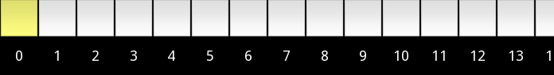

This application is designed to build and run Turing machines with a bidirectional infinite tape. It has a simple graphical interface allowing you, the user, to create states and transitions controlling the behaviour of the machine, define the start conditions, and set accepting states. It also provides the facility to run the Turing machine on a pre-populated tape, either by stepping through or running the machine to completion.
James Ashworth, Colin Maynard
On first launching the application, you will see a menu screen presenting four options:
Pressing 'New Machine' will open a dialog box asking you to name the machine. This name will be used to identify the machine, as well as for naming files associated with saving the machine. Once a valid name has been entered, a blank Turing machine will be created and you will be taken to the Build screen, where you will be asked to define the alphabet (see 'Define Alphabet' under 'Build Screen').
Pressing 'Load Machine' will open a dialog to choose a file, starting in the application directory. Files must have the xml extension to be picked up by the dialog. When you have picked a file, the application will attempt to load it. Errors will cause the load to fail, and you will be informed of the reason. Once a valid file has been loaded, you will be taken to the Build screen.
Pressing 'Delete Machine' will open a dialog to choose an xml file, starting in the application directory. Choosing the file will delete it, and any associated auto-save files, allowing a new machine to be created with this name.
| Menu | Move | States | Transitions | Delete | Start State |
Final States |
Alphabet | Undo | Save | Redo | Run |
Pressing the 'Menu' button will return you to the 'Menu Screen'. In addition to the four options already listed, there will now be a button in the top right-hand corner allowing you to reopen the last machine that you were editing.
This is the default mode when opening the Build screen. While in 'Move' mode, there are two modes of behaviour:
Pressing and dragging the background will move the entire Turing Machine on the canvas. No changes will be made other than position.
Double-tapping on the background will center the entire Turing machine on the canvas. No changes will be made other than position.
While in 'State' mode, there are three modes of behaviour:
Pressing a suitable blank spot on the canvas will create a new state. A spot is suitable if a state could be created centered there without colliding with an existing state. The state will be given an automatic name (the lowest number, starting from 0, not already allocated). If the state is the only / first state, it will be set as the start state for the machine.
Pressing and dragging on an existing state will move it around the canvas. A state will follow the touch unless that would cause collision with another state, in which case it will hold position until the touch enters a new valid position.
Double-tapping on a state will open a dialog allowing you to rename the state. State names are limited to four characters for display reasons, and must be unique. Cancelling the dialog will not cause a change.
While in 'Transition' mode, there are three modes of behaviour:
Pressing and dragging on an existing state will create a new transition. The end of the transition will follow the touch until the touch is released. If the touch is released over the canvas the transition will be removed. If the touch is released over any state (including the initial state), a transition will be created. A dialog box will then be opened to define the transition. Cancelling this dialog will remove the transition.
Existing transitions have green 'grabbers' associated with them. Pressing and dragging the grabber will alter the shape of the transition.
Double-tapping on a grabber will open a dialog allowing you to redefine the transition. Transitions must be unique (any state can have a maximum of one transition for each symbol in the alphabet being read). Cancelling the dialog will not cause a change.
While in 'Delete' mode, pressing an element (either a state or a transition grabber) will remove that element (and dependent elements) from the Turing machine. Removing a state, for instance, will remove all transitions entering or leaving that state.
While in 'Start State' mode, pressing a state will set it as the initial state for simulation. There must always be exactly one start state in a machine, so it cannot be unset, only reallocated.
While in 'Final State' mode, pressing a state will toggle its acceptance state for simulation. There can be zero or more accepting states in a machine, so pressing a state again will toggle its acceptance once again.
Pressing the 'Define Alphabet' button will open a dialog allowing the user to modify the alphabet of the Turing machine. The alphabet is restricted to alphanumeric characters, and the blank character ('_').
Pressing the 'Undo' button will reverse the most recent change to the Turing machine. This includes: state creation, movement, modification, acceptance toggling, and deletion; transition creation, movement, modification, and deletion; and tape modification and shifting.
Pressing the 'Save' button will commit the current autosave file (filename.xml~) to overwrite the existing file. Until this point, all changes are saved separately, and the original file can be reloaded.
Pressing the 'Redo' button will redo the most recent undone change, assuming that no changes have been made in the interim.
Pressing the 'Run' button will move to the 'Run Screen', assuming that there is a minimum of one state. The canvas will be centered on the start state.
| Build | Step Back |
Step | Run | Pause | Reset | Run to Finish |
Speed |
Pressing the 'Build' button will end the simulation, reset the tape, and move to the 'Build Screen'.
Pressing the 'Step Back' button will cause the simulation to retreat by one transition. It will also end the effects of the 'Run Button'.
Pressing the 'Step' button will cause the simulation to advance by one transition. It will also end the effects of the 'Run Button'.
Pressing the 'Run' button causes the system to automatically advance to the next transition as soon as the previous transition completes (similar to pressing the 'Step Button' repeatedly).
Pressing the 'Pause' button will end the effects of the 'Run Button'.
Pressing the 'Reset' button will immediately end the current transition, reset the tape to its initial value, and re-center the canvas on the start state.
Pressing the 'Run to Finish' button will start a new thread to simulate the Turing machine without graphical involvement. A progress bar will show the number of steps taken and allow the user to cancel. When the simulation finishes, the results will be displayed on screen.
Adjusting the 'Speed Slider' will change the speed of animation for graphical simulation. At the lowest speed, the system will run at a maximum of one transition per second. At the highest, that increases to ten transitions per second.
|  | |||
| Reset Tape Position |
Shift Tape Left |
Shift Tape Right |
Pressing the 'Reset Tape Position' button will scroll the tape until cell zero is in the default position (left for the 'Build Screen', center for the 'Run Screen').
Pressing the 'Shift Left' button will move each cell on the tape, so that the value at cell one is now in cell zero, two is in one, etc. This is useful for machines that have been loaded with a bidirectional tape but no offset.
Behaves as the 'Shift Left' button, but in the opposite direction.
The application can now be run on any size of screen, and will adjust the element sizes and font to match.
Opening the keyboard will now shrink the application by a corresponding amount, such that the keyboard can no longer cover the entry point for text.
All toolbar elements now have a corresponding image, for easier 'at-a-glance' identification of buttons.
When graphically running a machine, the user can now step backwards through the simulation, as well as stepping and running forwards.